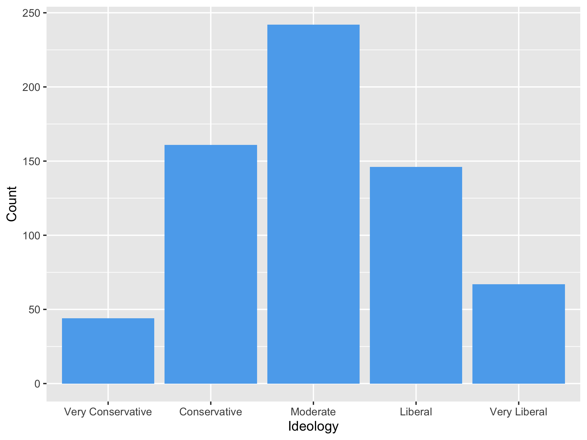

Practice Exam 1: Vietnam Draft and Political Attitudes and Behavior
You can find instructions for obtaining and submitting problem sets and exams here.
You can find the GitHub Classroom link to download the template repository on the Ed Board
Background
The exercises below are based on the following paper:
Green, Donald P., Tiffancy C. Davenport, and Kolby Hanson (2019). “Are There Long-Term Effects of the Vietnam Draft on Political Attitudes or Behavior? Apparently Not.” Journal of Experimental Political Science. 6(2), 71-80.
This paper examines the long-term effects of the Vietnam draft lottery on the political attitudes and behavior of the men who were were eligible for the draft during the period of 1969–1971. Based on birth dates, the draft lottery was used to randomly select men who turned 19 prior to 1969, 1970 and 1971 to serve in the US army. Many of those drafted did not comply with the draft and did not serve in Vietnam for various reasons, including opposition to the war. The authors use a survey and publicly available information, such as voter registration, voter records and partisan membership of eligible draftees to study whether being assigned to the draft has any long-term political effects.
The data set draft.csv contains the following variables that were obtained from surveys conducted by the authors on draft-eligible men from 2014 to 2016.
| Name | Description |
|---|---|
draft |
Whether a respondent was assigned to the draft (1) or not (0) |
year |
Birth year |
ideology |
How respondent describes their political views in 2014-16 survey. Takes values from 1 to 5 where 1 is “very conservative,” 2 is “conservative,” 3 is “moderate,” 4 is “liberal,” and 5 is “very liberal.” |
state |
Respondent’s living state in 2014 |
Instructions
This exam is open-book, open-note, and open-internet. However, you are forbidden from communicating with other humans about the exam. This includes, but is not limited to: exchanging texts/emails/chats/DMs etc about the exam; sharing notes about the exam or the course; posting material on the internet about the exam; asking for help with a question on the exam from online forums; requesting that someone produce materials that could be helpful for the exam. Basically, use your common sense and complete this assignment on your own.
You may submit to the autograder as many times as you would like, just like a normal problem set.
Please write any written, non-code responses in the main text and not in the R code chunks. Also, do not include hastags
#in the main text except on the lines indicating## Questionor## Answer.Please check your final PDF before uploading it and ensure that your written answers and plots are visible and correctly reflect your final answers.
If you have a clarification question or you think there is an issue with the autograder, please email myself and your TF with your question. We will either say that we cannot answer the question or we will send a note to the entire class with the answer.
Please do not post anything about the exam on Slack or Ed.
Question 1
Use read_csv to load the data and assign it to the name draft. You will use this data to reproduce the following figure:

To create this plot, make sure to:
- Remove any observations that have ideology missing.
- Create a summary table that counts the number of rows for each value of
ideology. - Pass this to
ggplotto produce the barplot.
You do not have to recreate the x-axis labels, but if you want to, be sure to convert ideology to a factor and add scale_x_discrete(labels = c("Label 1", "Label 2", <<rest of labels>>)) to your chain of ggplot calls.
Question 2
Create a new binary variable, liberal, that is 1 if a respondent says they are liberal or very liberal and 0 otherwise. Use mutate() to create this variable and save resulting tibble with the new variable as draft again. Use this variable to calculate the sample proportion of respondents that are liberal (i.e., the sample mean) by year that respondents were born in. Note that ideology (and thus liberal) has missing values in it and you should remove those observations from any calculations. You should save the tibble resulting from your calculations of the sample means as liberal_year. Use select() to make sure this tibble only has two columns: the year and the estimated sample proportions.
Pass liberal_year to knitr::kable() to produce a nicely formatted table with informative column labels and only 2 digits in the proportions.
Briefly interpret the result (a sentence will suffice).
Question 3
Events at an early stage of life can have a long-lasting impact on a person’s political perspectives. Let’s see if this is true for this setting. Estimate the sample average treatment effect (SATE) of being drafted (draft) on being liberal (liberal) and save this value as sate.
Report your estimate in the write-up and briefly interpret the result in a sentence.
Question 4
Even if we assign the same treatment, that treatment might affect respondents with different characteristics differently. In this question, we focus on birth year. Estimate the sample average treatment effect of being drafted on identifying as liberal in 2014 by year of birth. Save the resulting tibble of your code as ate_year. Use knitr::kable() to print a nicely formatted table of these effects with informative column labels and only 2 digits in the estimated effects. The result should look like:
| year | Estimated SATE |
|---|---|
| 1950 | XXX |
| 1951 | XXX |
| 1952 | XXX |
with XXX replaced by the estimated SATEs for each year.
In the main text, briefly describe how the effect varies by birth year.
Question 5
Your co-workers Bobby Boxplot and Harriet Histogram are arguing about what the treatment should be in this study. Bobby says that the study should use whether the respondent actually served in Vietnam as the treatment, whereas Harriet says that it should be being drafted or not as we have done up until now. Given what you know about the setting, which of these two approaches would have higher internal validity? Discuss your reasoning briefly for your answer in two to four sentences. Hint: be sure to review the description of the study at the beginning of this document to remind yourself of how the draft worked.